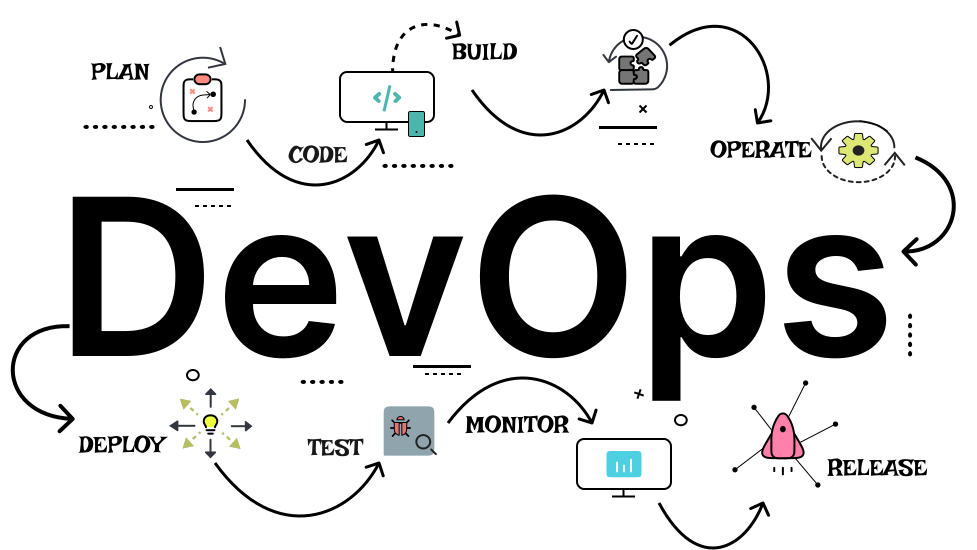

<!-- *********************************************************** 
* Copyright (C) 2022 
* Worktez 
* Author : Abhishek Mishra <am1426620@gmail.com>
* 
* This program is free software; you can redistribute it and/or 
* modify it under the terms of the MIT License 
* 
* 
* This program is distributed in the hope that it will be useful, 
* but WITHOUT ANY WARRANTY; without even the implied warranty of 
* MERCHANTABILITY or FITNESS FOR A PARTICULAR PURPOSE. 
* See the MIT License for more details. 
*********************************************************** -->
<div class="page p-4">
    <div class="row">
        <div class="col"></div>
        <div class="col-md-8 col-12">
            <div class="card p-4">
                <div class="card-body text-center">
                    <h1 class="heading pb-4">
                        Maximizing Efficiency and Collaboration: The Benefits of DevOps
                    </h1>
                    <p class="py-2 pb2">
                        DevOps is a set of practices and culture that aims to bridge the gap between development and operations teams, and to increase collaboration and communication between these teams. This approach enables organizations to deliver software faster and more reliably, by automating the software development lifecycle (SDLC) and by implementing continuous integration and continuous delivery (CI/CD) practices.
                    </p>
                    <span class="align-middle">
                         
                    </span>
                    <p class="py-2 pt-3">
                        One of the key principles of DevOps is the use of automation and scripting to manage the entire SDLC, from development to deployment and operations. This includes automating the build, test, and deployment of code, as well as the provisioning and management of infrastructure. By automating these processes, organizations can reduce errors, improve efficiency, and increase the speed of delivery.
                    </p>
                    <p class="py-2">
                        Another key principle of DevOps is the use of monitoring and logging tools to track the performance of applications and infrastructure. This allows organizations to quickly identify and resolve any issues that arise, and to make data-driven decisions to improve performance and availability.
                    </p>
                    <span class="align-middle">
                         
                    </span>
                    <p class="py-2">
                        DevOps culture is also an important aspect of this approach, it emphasizes collaboration, communication, and shared responsibility across teams. This means breaking down silos between development, testing, and operations teams, and fostering a culture of continuous improvement.
                    </p>
                    <p class="py-2">
                        Some popular DevOps tools include Ansible, Puppet, and Chef for configuration management; Jenkins, Travis CI, and CircleCI for continuous integration; and Docker and Kubernetes for containerization and orchestration.
                    </p>
                    <p class="title py-4">Conclusion</p>
                    <p class="py-2">
                        In summary, DevOps is a set of practices and culture that aims to bridge the gap between development and operations teams and to increase collaboration and communication between these teams. It aims to automate the software development lifecycle and implement continuous integration and continuous delivery practices. It also emphasizes monitoring and logging to track the performance of applications and infrastructure and a culture of collaboration and continuous improvement.
                    </p>
                    <div class="row py-5 pt-5">
                        <div class="col align-middle">
                            <span class="card-title align-top pt-2 px-2"> Content Author: </span>
                            
                            <span class="card-text align-top px-2 text-left" style="display: inline-block;"> Bhavya Singh<br> <span style="font-size: 10px;"> bhavya.singh220@gmail.com</span> <br>
                                <span class="pr-2">
                                    <a href="https://www.linkedin.com/in/bsingh75/" target="_blank"></a>
                                </span>
                            </span>
                        </div>
                        <div class="col align-middle">
                            <span class="card-title align-top pt-2 px-2"> Code Author: </span>
                            
                            <span class="card-text align-top px-2 text-left" style="display: inline-block;"> Abhishek Mishra<br> <span style="font-size: 10px;">am1426620@gmail.com</span> <br>
                                <span class="pr-2">
                                    <a href="https://github.com/abhishek-mishra019" target="_blank"></a>
                                </span>
                                <span class="pr-2">
                                    <a href="https://www.linkedin.com/in/abhishek-mishra019/" target="_blank"></a>
                                </span>
                            </span>
                        </div>
                    </div>
                </div>
              </div>
            
        </div>
        <div class="col"></div>
    </div>
    
    
</div>